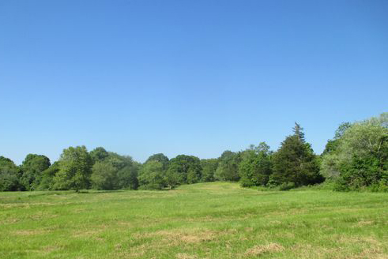

The real house is the Conanicut Island Lighthouse, which is located in James Town on Conanicut Island. It is a real private home, who has lend their exterior to create this nice looking home.
This is the place where 12-year-old Suzy lives with her parents and 3 brothers.
In reality Camp Ivanhoe was constructed on Bayfield Farm at Camp Fuller Road in South Kingstown. So not a real campsite but a piece of land got to be the location of the Scouts of Troop 55.
The young Sam lives here for the summer the summers of 1964 & 1965 with Troop 55 of the Khaki Scouts.
The church that gets used a couple of times mostly for the interior is a Church in Newport called Trinity Church. Though we mostly see the inside, the whole structure is included as the spire that in the climax of the movie falls down exits but still on and in fine condition.
This church really plays an important role for these young kids as it is the place they meet for the first time at a play called Noye's Fludde. It is also the place where the world around them finally realise that the young lovers can't be kept apart as they try to make an escape in the middle of a violent storm that in eventually takes down the spire.
The cove itself is a bay area right beneath Fort Wetherall in Jamestown. This is the main location for these scenes with some changes and shots from other nearby coves is also used depending on the angle
After the two lovers run away the first time around hiking through the woods, they end up at this beatiful campsite. They share a lot of moments at this place, but unlikely gets found here as well after lodging for a night.
This Camp site unlike the other one is actually a real life campsite for real Scout troops, Camp Yawgoog in Rockville. A very big camp site so chosen locations are used.
The place for Suzy and Sam's second attempt at running away. With the help of some of the members of Sam's scout troop they get here and they almost manage to get away this time but nature gets in the way and they end up having to take refuge in St. Jack's Church